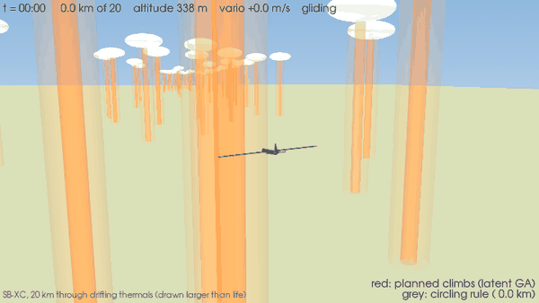
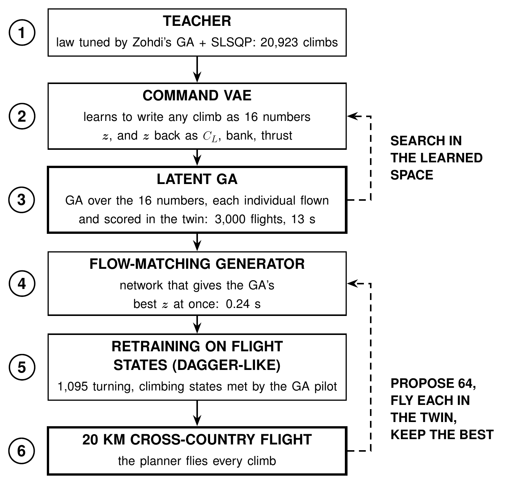
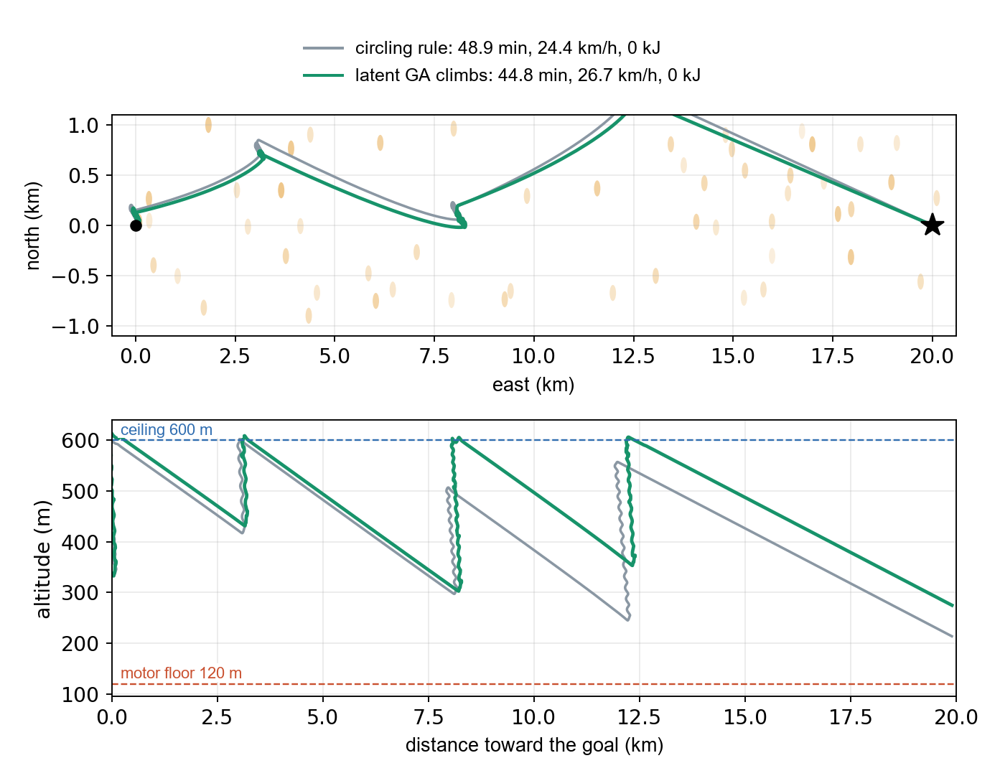
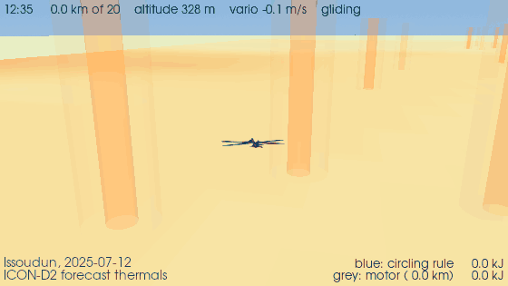
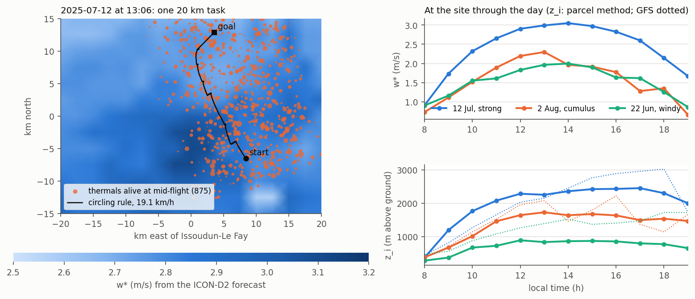

Simulation study · SB-XC sailplane · since October 2026
A simulated sailplane plans each thermal climb with a generator distilled from a genetic search in a learned command space. It climbs 70 % faster than a classic circling rule on tasks it never trained on, in 0.24 s per plan, and now flies in thermals built from a real weather forecast.

It extends the flatness-based glide planning of Morando et al. (ICRA 2025) from efficient gliding to soaring. A slow offline teacher solves thousands of single-thermal climbs. A variational autoencoder learns its commands (lift coefficient, bank, thrust) and its decoder flies them through a point-mass simulator, so every sample respects the aircraft's limits. A genetic algorithm searching that latent space beats the teacher; a flow matching model distills the search into a 0.24 s generator, retrained once on the states the search met in flight (DAgger-like). A MacCready tactician picks the thermals; the planner flies every climb.

64 cross-country tasks of 20 km in synthetic drifting thermals, at two MacCready settings (0.5 / 1). Every pilot flies the same tasks with the same autopilot.
| Climbs | Mean climb, m/s | Speed, km/h | Battery, kJ |
|---|---|---|---|
| Motor all the way | 29.2 | 61.9 | |
| Circling rule | 1.29 / 1.22 | 24.9 / 28.3 | 2.9 / 19.3 |
| Latent GA, 1,000 flights per 60 s block | 2.08 / 2.07 | 28.2 / 29.5 | 2.9 / 4.7 |
| Generator distilled on single thermals only | 1.50 / 1.17 | 25.1 / 28.8 | 4.2 / 20.2 |
| Generator after one DAgger-like round, 0.24 s | 2.23 / 2.20 | 28.5 / 30.2 | 2.9 / 4.7 |
At MacCready 1 the generator is as fast as the motor (30.2 against 29.2 km/h) with 13 times less battery, and no wing-section stall. One run per row; thermals are known exactly in these tasks.

New · real forecast
The synthetic thermals are replaced by ones built from the archived DWD ICON-D2 forecast (2.2 km) around Issoudun-Le Fay, for three days of 2025. The forecast surface heat flux and convective layer depth give the thermal strength w* point by point and hour by hour; following Allen's model (NASA), thermals are spaced by the layer depth, live 5 to 30 minutes, drift with the forecast wind, and the air sinks between them.


| 48 tasks per day | Arrived | Battery, kJ | km/h |
|---|---|---|---|
| 12 Jul · strong blue thermals | |||
| Motor all the way | 100 % | 120.7 | 26.7 |
| Circling rule, MacCready 1 | 100 % | 1.3 | 24.0 |
| 2 Aug · cumulus day | |||
| Motor all the way | 100 % | 89.3 | 29.3 |
| Circling rule, MacCready 1 | 100 % | 0.5 | 28.5 |
| 22 Jun · windy, shallow layer | |||
| Motor all the way | 100 % | 94.7 | 36.7 |
| Circling rule, MacCready 1 | 54 % | 65.4 | 26.6 |
On the two good days the circling rule flies nearly every task without the motor, 1 to 4 km/h slower than the motor. On the windy day, with about 7 m/s of wind for an aircraft whose best-glide speed is 9 m/s, it climbs at 0.8 m/s and drifts a kilometre per climb: a day for the motor.
The tactician learned to count the wind: glides over the ground, the drift during a climb, a final glide only when it is really safe. The genetic search and the generator fly these days next.
Open this task in 3D: the forecast map hour by hour, every thermal, three pilots and a barogram.